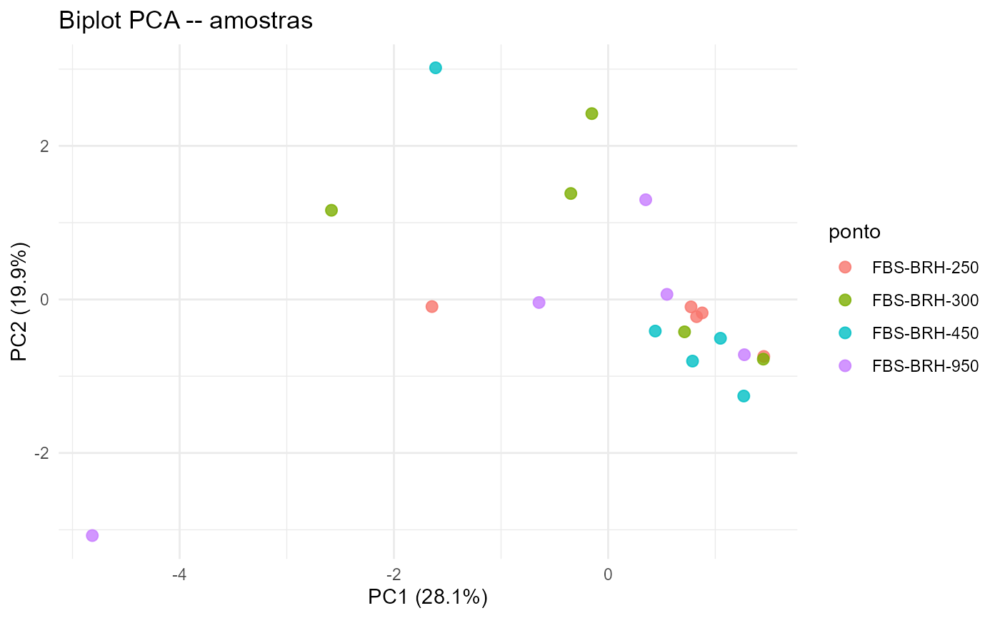
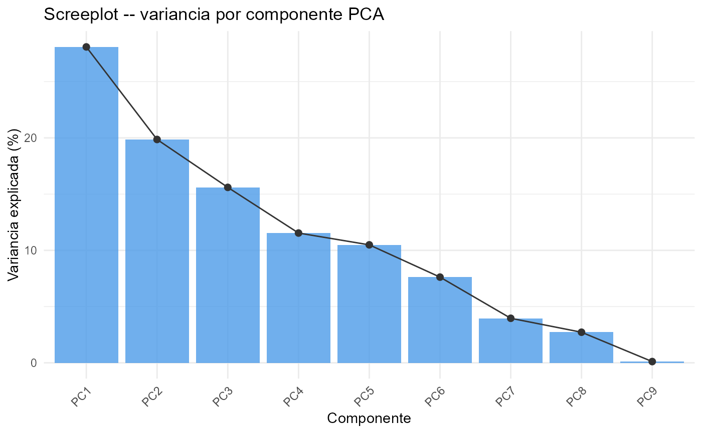

Analise de Componentes Principais (PCA) de parametros de qualidade da agua
Source:R/wq_pca.R
wq_pca.RdWrapper simplificado sobre stats::prcomp() para dados de qualidade
da agua. Retorna o objeto PCA, scores por amostra, contribuicao das
variaveis (loadings), variancia explicada e dois graficos prontos
(biplot e screeplot).
Arguments
- df
Data frame com os parametros a incluir na analise.
- params
Character vector; nomes das colunas a usar. Se
NULL(default), todas as colunas numericas sao usadas (excluindolat,lon, e colunas com sufixo_ok,_status,_delta).- color_by
Character ou
NULL; coluna para colorir as amostras no biplot (ex.:"ponto","season").- label_by
Character ou
NULL; coluna para rotular as amostras no biplot (ex.:"ponto").- n_components
Integer; numero de componentes a reter. Default
4.
Value
Uma lista com:
- pca
Objeto
prcomp.- scores
Tibble com scores (PC1...PCn) por amostra, mais as colunas de agrupamento (
color_by,label_by).- loadings
Tibble com loadings das variaveis.
- variance
Tibble com variancia explicada e acumulada por componente.
Os atributos "biplot", "screeplot" e "loadings_plot"
contem objetos ggplot.
Details
Apenas colunas numericas sao consideradas. Linhas com qualquer NA
nos parametros selecionados sao removidas (com aviso). O PCA e
sempre realizado sobre dados centrados e escalonados
(scale. = TRUE, center = TRUE).
Os graficos sao retornados como atributos do resultado:
attr(resultado, "biplot")– dispersao das amostras nos eixos PC1 x PC2, coloridas porcolor_by.attr(resultado, "screeplot")– variancia explicada por componente.attr(resultado, "loadings_plot")– contribuicao das variaveis no plano PC1 x PC2.
Examples
# \donttest{
data("wq_demo", package = "tikatuwq")
res <- wq_pca(wq_demo, color_by = "ponto")
print(res$variance)
#> # A tibble: 9 × 3
#> componente variancia_pct acumulada_pct
#> <chr> <dbl> <dbl>
#> 1 PC1 28.1 28.1
#> 2 PC2 19.9 48.0
#> 3 PC3 15.6 63.6
#> 4 PC4 11.5 75.1
#> 5 PC5 10.5 85.6
#> 6 PC6 7.62 93.2
#> 7 PC7 3.96 97.2
#> 8 PC8 2.72 99.9
#> 9 PC9 0.11 100
attr(res, "biplot")

attr(res, "screeplot")

# }